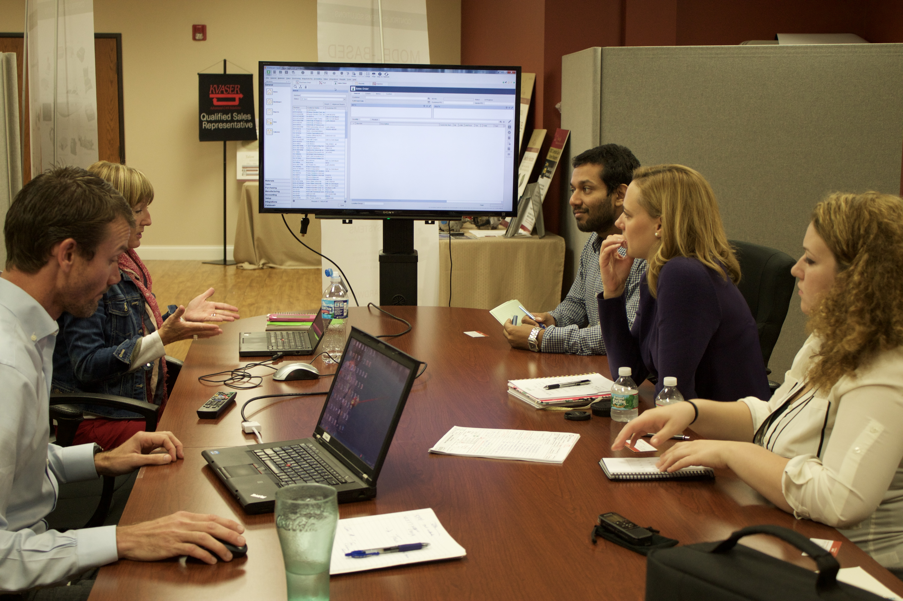
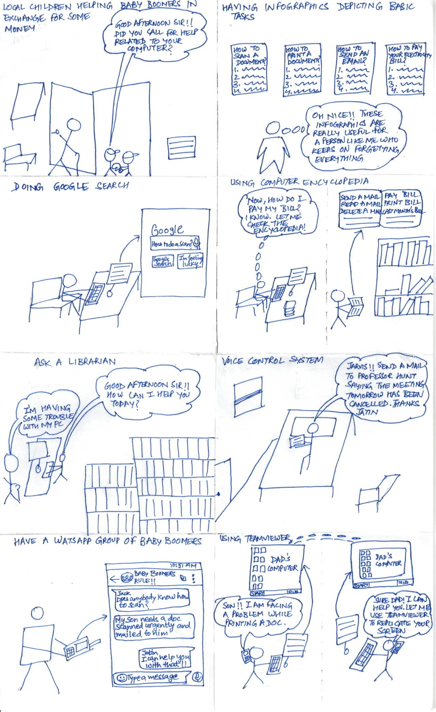
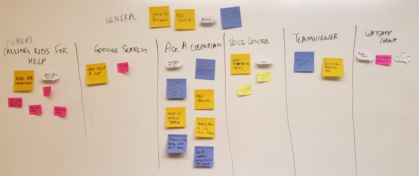
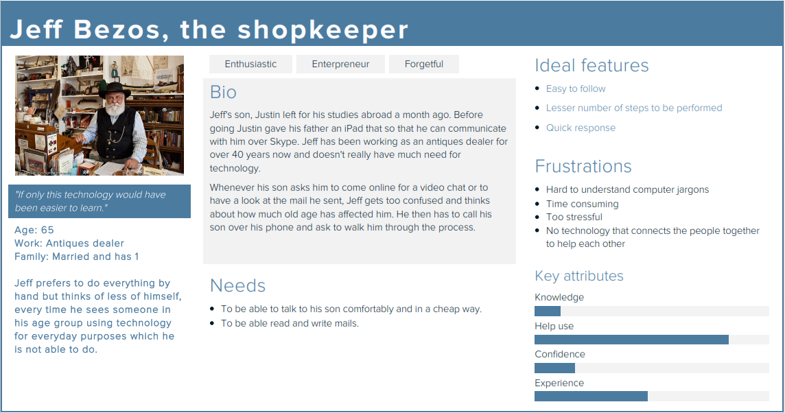
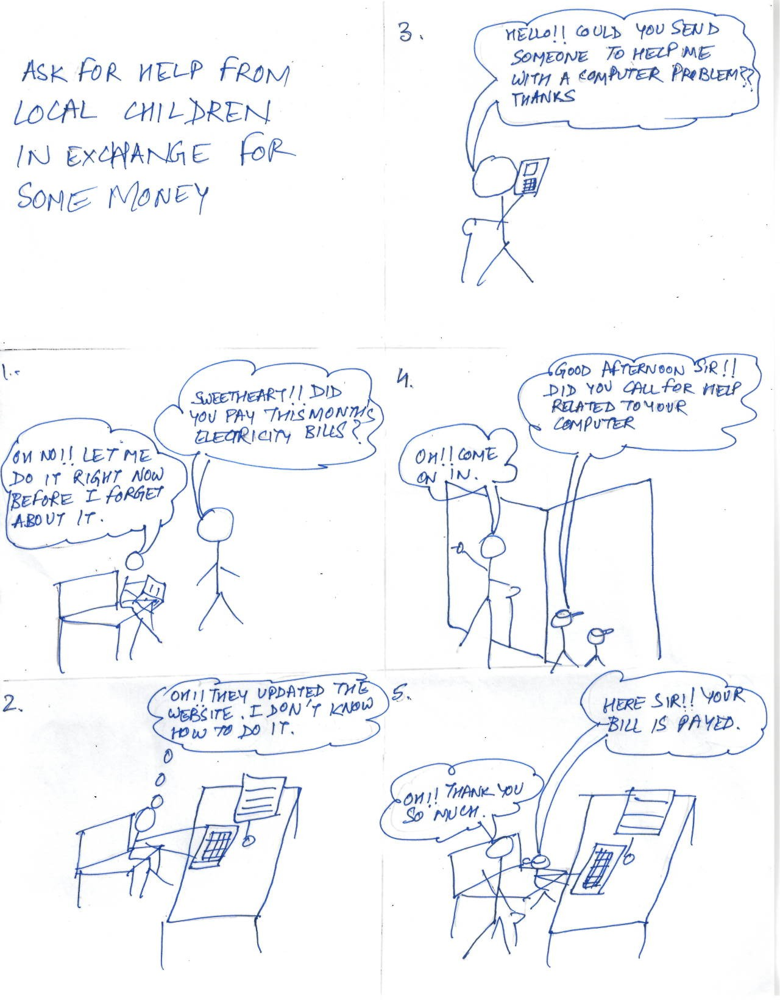
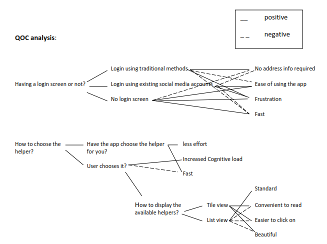
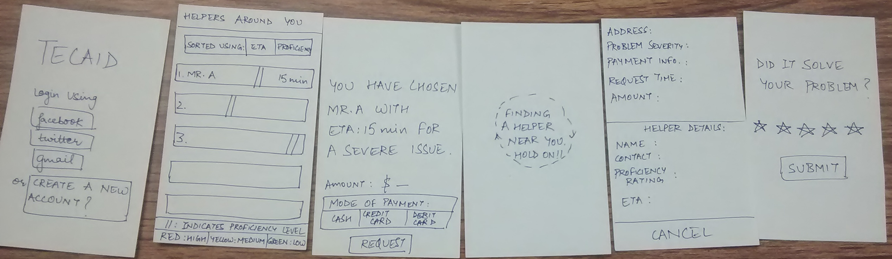

I am a first year masters student at the University of Michigan studying Human-computer interaction and curious to discover things and a passion to make stuff as the driving factor.
I use design to tell stories and to save people from bad products through my creative solutions.
Conducted contextual inquiry and created an affinity wall to study and find out the gaps in the order fulfillment process of New Eagle; a control system solutions expert based out of Ann Arbor.
Who is New Eagle?
New Eagle is a mechatronics control systems solutions expert that helps a customer take his or her his idea to prototype phase or to the market in the quickest way possible. See the persona here.
Methodology

To begin our research, we met with our client for an initial meeting to have a sense of the company’s domain and the problem that they are facing. Through this meeting we identified a set of key stakeholders that would help us in getting a more thorough grasp on the criticality of the problem. We also got to know the solutions already explored by them in order to curb the problem.
For understanding the problem in more depth and at the employee level, we conducted a set of contextual interviews with the key players involved which in our case were two customers, two employees working on the operations side and one on the administrative side. Following each interview we conducted an interpretation session of approximately the same duration as the interview, with all the members of the team. During the interpretation session, the key observations, findings, quotes etc. (from the notes and the audio recording of the interview), that could be of relevance were accumulated and stored in a document to be referred to later.
Meanwhile the interviews were going on; each of the team members did background research on different topics. The topics covered the overview of the client industry, some issues or trends influencing the sector of which our client is a part of, the strengths and weaknesses of the competitors of the client and scholarly research related to the issue being faced by the client. This research helped us in understanding the client industry and to think about the issue from their perspective. With this, our interview questions became more and more specific from being very abstract in the beginning.
The notes from the interviews were annotated to find out some key things that might have been missed and to deduce the interviewer’s answer to a question as a whole. To elaborate, most of the times people do not say what they want to say and hence deducing from their language what they meant to say becomes absolutely essential. This gave us some key insights into the interview which were also included in the notes of the interview.
The notes from all the interviews were integrated to form an affinity wall. An affinity wall is built in order to get all the data relevant to the problem together at one place, which can then be chunked together to find out five or six problem areas.
With these five or six key findings we met with the management again, in order to discuss it with them and see which the most problematic area was for them. From the meeting, two key areas which were troubling our client the most came up and thus we began our research for the recommendations.
As a team, we discussed on the two issues to see if anything related to them came up in our respective background research reports. We then brainstormed for some solutions and in the end came up with our recommendations, of which one was our primary recommendation that will have the maximum impact with reasonable amount of effort and two or three secondary recommendations that when implemented will either have low impact or involved a lot of effort. In order to make our recommendations/solutions more concrete, two to three evidence like findings, quotes from interview were used as well.
Conceptualized and designed an app Tecaid, which helps baby boomers request for timely technical assistance from local neighbourhood high school students looking for community service credit
Process in brief
Conducted in person user interviews, brainstormed ideas through sketches, created personas using Xtensio and digital/paper prototypes using Axure, Invision and Figma
Design Process
As I started solving this problem of inaccessibility of technology for baby boomers, I wanted to make baby boomers independent and self-reliant by showing them tutorials or through screenshots or by the use of narrative. While sketching ideas for solving this problem, I came up with many solutions.

While I was brainstorming with two of my peers, the idea about asking a librarian stuck to us the most as it is free and essentially the work gets delegated to someone else.

Teaching google search idea came off as something which was very hard to implement but which can have very high impact, taking into consideration the assumption that google won’t change its interface and become inaccessible. Using Teamviewer to help solve the problem had problems such as what happens when the issue is with connection of physical devices and also it did not offer complete independence for the baby boomer as the child would still have to be present to act as a tech support.
Here is a persona I developed.

From the interviews I conducted with baby boomers, two things surfaced. Use of watsApp to connect the baby boomers was not encouraged a lot as it was very much dependent on demographics and in US, watsApp is not even used that much. Secondly, the population in this range wants to get their work done as quickly and as much without frustration as possible and they like to ask for help. For this they consider, library as one of the best resource. One more thing that came through the interview was regarding my solution of connecting baby boomers to the local primary school children. One of the interviewees suggested that there would be a security issue with the primary school children, so why not consider high school children looking for community service credit.
Thus I shifted my focus to connecting baby boomers to high school children as by the above reasoning, the high school students would have much more motivation to help and also the security issue is somewhat eliminated. Keeping this scenario in mind, I decided to work on an app that helps baby boomers request for timely technical assistance from high school students in the neighborhood looking for community service credit.

Having a somewhat well framed problem, I started conducting the QOC (Questions, Options and criterion) analysis for the features I would be putting in the app.

It was hard as I had to keep it very simple and intuitive at the same time. I had to think about readability, clickability, payment modes and not making my user more conscious than he is already is. Thus I came up with 3 prototypes implementing different ways to choose helpers, to on-board people to the app, for inputting the problem, for logging into the app, for entering location and for giving feedback for the help received. One of them is shown below.

But as you can see, choosing so many things is still a very high cognitive load for the baby boomers and thus it tends to repel them away from using the app. Thus, I decided to make the app do most of the things like choosing the helper, getting location using GPS and only asking the user about how urgent the problem and in how much time they would like the helper to arrive rather than inputting the complete problem. For login, I decided to use the social media accounts of the baby boomers and once they have logged in, they would not be asked to login again. In regards to giving feedback, I gave the user ability to give or not to give the feedback.
Some other important details that I took into consideration while designing the app were having not more than 3 buttons on a screen, having circular buttons to increase clickability and readability, paying particular attention to navigation i.e. to say giving the user the ability to go back and correct any mistakes or any discourse they might have taken while going through the process. Here is the final digital prototype that I ended up with.
As I started creating a digital prototype for my app, a lot of minor things like where to put a particular icon, how to ask the question from the user in a clear language, where to show the popups, which font and font-weight to use, where to navigate to from a particular screen, where to show the error, which color combination to use that is the right contrast, crept up. As I kept on reiterating, the feedback kept on becoming more and more emotional as in how the user might feel when using the app. That is when I decided to stop reiterating and let the actual users decide the outcome of the app and whether I have been successful in making technology less intimidating for them or not.
Final digital prototype:
About Jatin!
Hello everybody. I am a first-year masters student studying Interaction design at University of Michigan School of Information. I want to work at a firm that allows me to apply my skills in interaction design to real world problems so that I can use it to make interfaces of the future.
Philosophy: As we are a product of our actions, why not apply the design thinking skills to our decisions and become a better version of ourselves? As applicable to me, I started with the problem of how to learn design thinking. I looked at the different resources available, chose one resource, started practicing design and got feedback. The same process was repeated several times and is still ongoing. Along the way, I have become much better at design than what I was when I started. Some of the learnings along the way.
I like photography and reading a lot. Love to travel and explore. I believe we should everyday try to do something that makes us afraid because fear is what brings out our true self. I like to play ping pong and hope to play against Xu Xin someday.